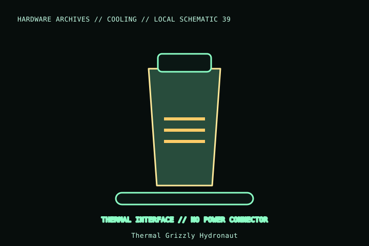

[ INDIVIDUAL COMPONENT // COOLING ]
Thermal Grizzly Hydronaut
Thermal Grizzly Hydronaut is a non-electrically-conductive thermal compound marketed for larger cooling solutions. Package quantities vary; check syringe label and listing so that volume is not mistaken for mass.

MODEL IDENTIFICATION: Verify full model, suffix, SKU, generation, connector, and host-support documentation against the physical item. The record describes only the identified model and does not guarantee host compatibility.
Specifications
| Exact identity | Thermal Grizzly Hydronaut; package size is SKU-dependent. |
|---|---|
| Interface type | Thermal compound for compatible processor/GPU and heatsink/cold-plate contact surfaces. |
| Electrical connection | None; no power connector or mounting pattern. |
| Electrical property | Manufacturer describes Hydronaut as non-electrically conductive. |
| Use caveat | Not liquid metal and not a thermal pad; use only where the host/cooler instructions permit compound. |
Compatibility and installation
- Identify the Hydronaut package quantity and lot from its label; do not confuse Hydronaut with Kryonaut, Kryonaut Extreme, or Conductonaut.
- Apply to a clean mating surface using the product/cooler maker’s guidance and keep it away from contacts and connectors.
- Do not substitute it for a pad or liquid metal specified by the original equipment design.
Service notes
Remove old compound before refitting a cooler, keeping debris out of sockets and circuitry. Recap after use and follow the manufacturer handling and storage directions.
Manufacturer references
- Thermal Grizzly — HydronautManufacturer Hydronaut product page and package/property information.
- Thermal Grizzly — KnowledgeManufacturer application and handling guidance.
Model variants and revisions may change specifications or included hardware; the manufacturer’s exact product page/manual and the host manual take precedence.